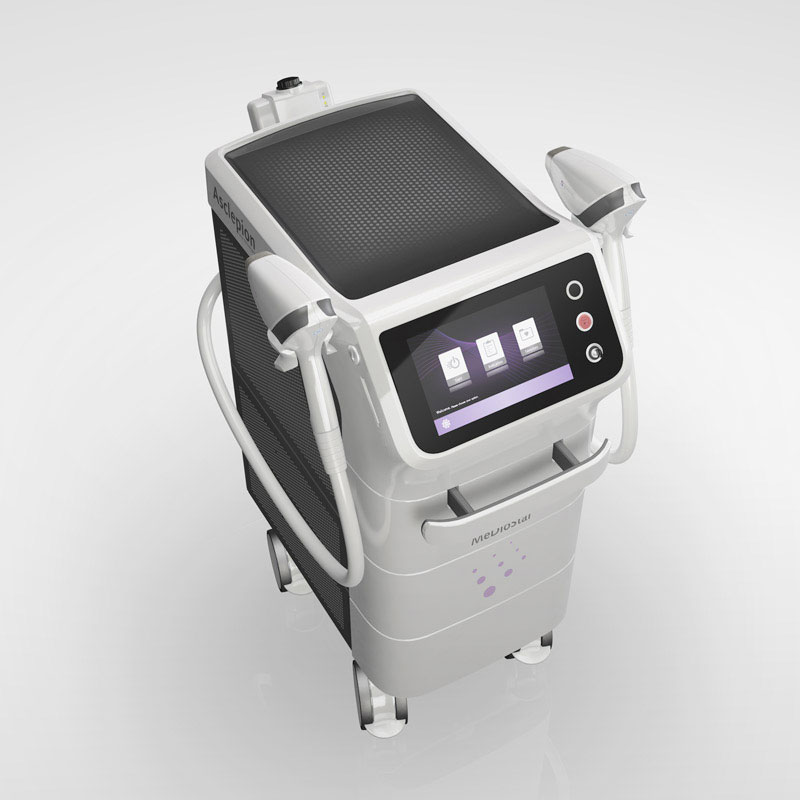
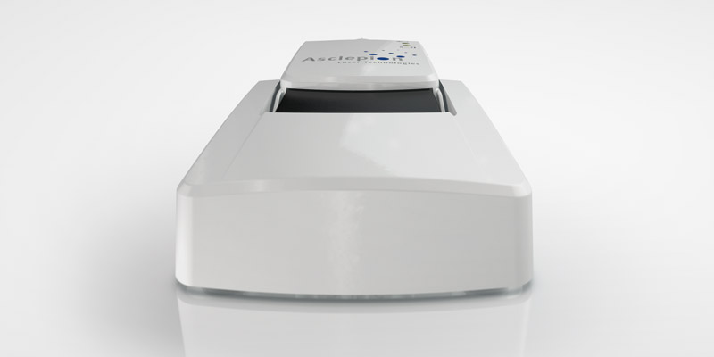
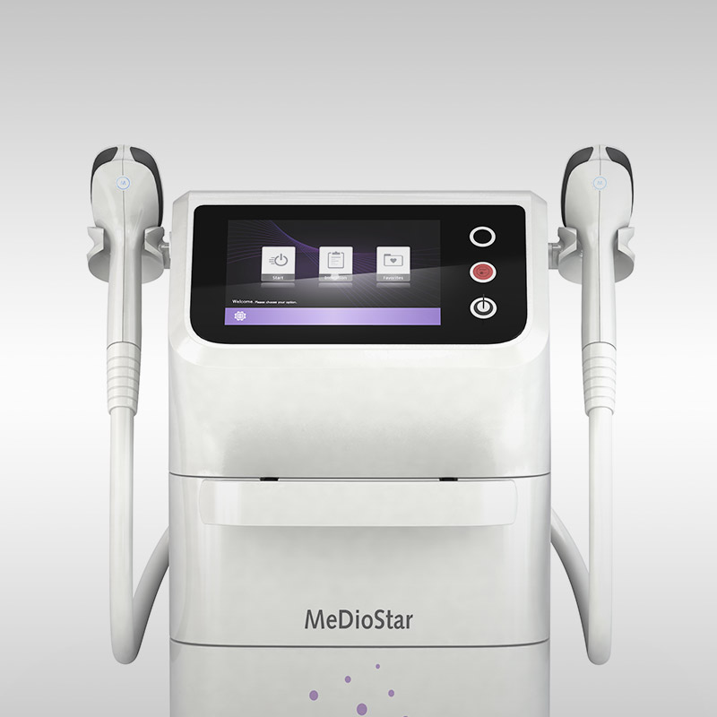
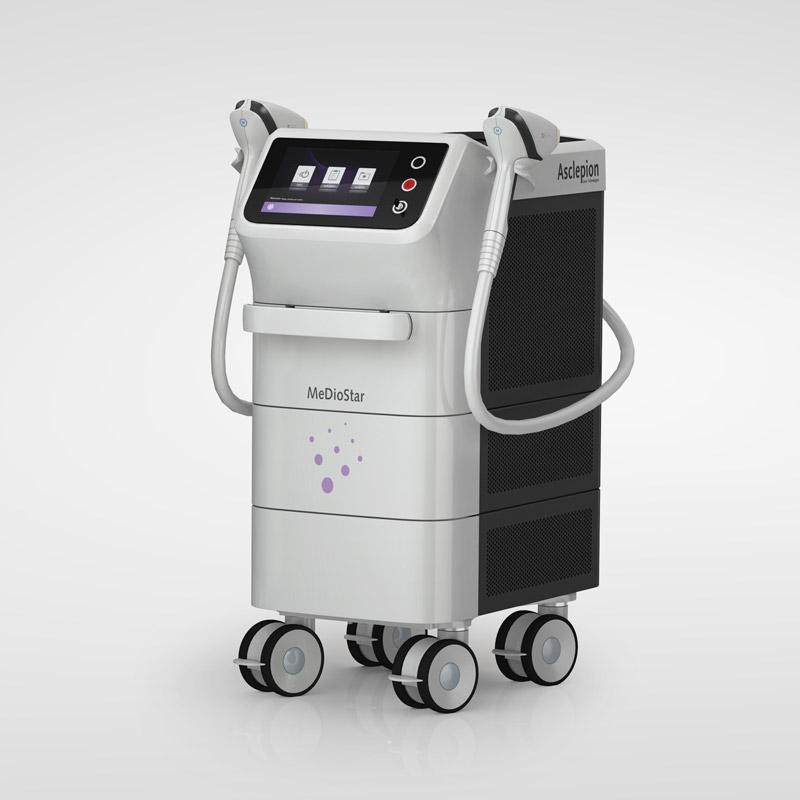

Der MeDioStar Monolith ist ein medizinischer Hochleistungs-Diodenlaser des deutschen Herstellers Asclepion Laser Technologies. Er wird in Arztpraxen, Kliniken und professionellen Kosmetikstudios primär für die dauerhafte Haarentfernung eingesetzt.
Neben der Haarentfernung deckt das System durch unterschiedliche Handstücke und Wellenlängen-Kombinationen (z. B. 810/940 nm) auch ästhetische und medizinische Hautbehandlungen ab.




Schmerzfreiheit: Er verfügt über eine integrierte 360°-Kontakthautkühlung. Die Haut wird direkt vor und während des Laserimpulses stark gekühlt, was Verbrennungen verhindert und die Behandlung nahezu schmerzfrei macht.
Kompetenz: Ein kompletter Männerrücken kann in unter 10 Minuten behandelt werden.
Präzision: Es lassen sich zwei Handstücke gleichzeitig anschließen, sodass Behandler fliegend zwischen Präzisionsarbeiten (z. B. Oberlippe) und Großflächen (z. B. Beine) wechseln können.